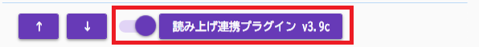

AIアシスタントを作る
攻略チートシートについて¶
- このチートシートはテーマを絞ってガイドする「攻略本」的なものです。
事前準備¶
前提条件
- ゆかりねっとコネクターNEO v2.0.128以降
- OpenAI社のGPT APIキーをもっていること
- VRM_AIをインストールしていること
※アバター表示が不要であれば、ゆかりねっとコネクターNEOだけで実現できます。
その場合は、この連携設定は不要です。
謝辞
- VRM_AIの開発者はとりにく様です。
うまく動かないときのレポートについて
- 本件について、とりにく様に直接問い合わせをしないでください。
1. APIキーの入手¶
APIキーは下記の性質があります
- キー情報を他人に漏洩しないこと。意図せぬ課金につながります。
- 使用した分だけ、OpenAIに課金されます。
- API管理ページに行きます。
- 「Create new secret key」をつくります。名前にはわかるものをいれます。
- このキーを控えます（閉じると再表示できません）。
{kind=link}
{kind=link}
{kind=link}
控えを取る前に閉じた場合
- 再表示できないので、同じ操作をして新しいキーを作成してください。
使いすぎを防止するため、クオータ（リミッター）の設定を推奨します
{kind=link}
2. ゆかコネ：AI設定¶
- ゆかりねっとコネクターNEOの「GPT3整形/AIアシスタント」をONにします。
-
赤枠に先ほど取得したAPIキーを設定します。
- モデル選択は「gpt-3.5-turbo-0301」にします。
{kind=link}
{kind=link}
{kind=link}
{kind=link}
{kind=link}
| タイトル | 設定内容 |
|---|---|
| 問い合わせに応じる | チェックを入れます。 |
| 起動ワード | この文字を含む場合にAIアシスタントを起動します。 |
| AIの名前 | アシスタント自身の名前を決めてください。表示される名前となります |
| 過去の問い合わせを記憶 | 過去のやり取りを5行分記憶します。 ・会話の掘り下げが可能になります ・API課金が若干増えます。 |
| 問い合わせ結果をVRM_AIに出力 | 字幕画面にださず、VRM_AIツール側に出力します。 (VRM_AIを使う場合に設定) |
| 通信先 | VRM_AIの通信ポートを指定します |
| 表情をOSC送信 | 感情パラメータがあればツールに表情パラメータを送ります |
| AIの役割 | 回答させる口調、トーン（人格）を決めます（詳細は下記） |
| パラメータ | OpenAIに送る設定を追記します（詳細は下記） |
AIの役割
- GPT3.5を選定した場合に有効です
- AIに設定した名前は $name_ai、 ユーザの名前は $name_user と書くことで置き換わります
- 返答フォーマットを「感情,程度,文章」と指示し返答されれば、VRM_AIなどと連動できます
- 感情のふり幅は0～1、感情は「Sad,Angry,Suprised,Happy,Relaxed」のいずれかです
パラメータ
- OpenAIが定めるパラメータを設定できます。
- 「max_tokens」は、トークンの使用上限です。通常は1000ぐらいで問題ありません。
- 「temperature」は、0～2.0 の値をとります。数字が大きいほど、返答にバリエーションがでます
3. ゆかコネ：音声設定¶
音声の出し方は、いくつか選べます
- VRM_AIを使う場合は、VRM_AI側で設定します
- ゆかコネの表示を使う場合は、ゆかコネ側で設定します。 この手順３は、ゆかコネ側の設定方法なので、VRM_AIを使う場合は次に進んでください。
-
まず、読み上げプラグインをONにして、設定を開きます。 
{kind=link}
{kind=link}
| タイトル | 設定内容 |
|---|---|
| 本文の読み上げを行う | チェックを入れます（入れないと読み上げできません） |
| 条件設定 | コチラに設定を追記します。 |
| - 話者名 | 誰の音声を設定するか、名前を入れます。 |
| - エンジン | その話者が話すときの発話エンジンを選びます。 |
| - 音声OFF | ミュートさせたい場合はチェックをいれます（例えば自分の文は読まないなど） |
他ツールと連携しないかたは、ここで設定終了です
{kind=link}
| タイトル | 設定内容 |
|---|---|
| 言語 | AI処理する入力を指定します |
| 無視するプラグイン | AI応答時に処理させたくないプラグインを指定します |
4. VRM_AI：設定¶
モデル表示する場合は、これを試してみると良いでしょう
-
基本的な部分は、とりにく様が書かれたマニュアルを見て設定します。
{kind=link}
| タイトル | 設定内容 |
|---|---|
| InputMode | script にします。この設定にしないとゆかコネの情報を受け取れません |
| VoiceApp | すきなものを選びます。ゆかコネ側でも音声を流す場合などは、AssistantSeikaを採用すれば音声の被りを回避できます。 |
{kind=link}
{kind=link}
{kind=link}
- うまくいくと、この様な画面がでて、アバターがしゃべり始めます
{kind=link}
- こんな感じになります
{kind=link}
謝辞
- 写真中のねこは、kanon様が公開されているアバターを活用しました。
- そこで、先ほどの下記の黒い画面だけ閉じます。
- これでゆかコネ側でしゃべると、字幕と音声がでるようになるはずです。
5. ゆかコネ:補足¶
-
ゆかコネだけで表示する場合は、「トークセッション」を使うと見やすいです
-
トークセッションの枠に顔を入れる方法
- オプション「話し手のイメージデータ」に画像を入れる任意のフォルダを指定する
- 「（なまえ）.png」のファイルを作る。サイズは任意だが 80x80程度。
- ブラウザを再表示することで表示されるようになります
最終更新日:
2023年6月9日